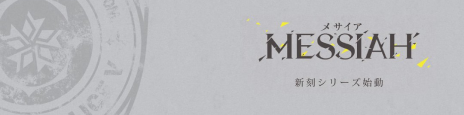
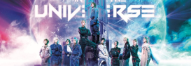
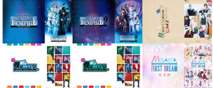

- Japanese 2.5 dimension musical and play is one of the greatest thing in my life.
- Here is a list of my favorite ones:

- Promise of Wizard(Musical): Based on a game with same name.
- --Story about 21 Wizards and their sage
- 
- Messiah(Play): I think it’s setting is based on somewhere but original stories
- --Sad stories and bad endings everywhere, but perfect in fightings
- 
- Hetalia the Musical(Musical): Based on the Manga “Hetalia: Axis Power”
- --If every country is a person... Best group of actors like a big family
- 
- Tsukipro series(play): Original stories based on characters of a music project
- --A big series with many characters and having new worldsettings everytime